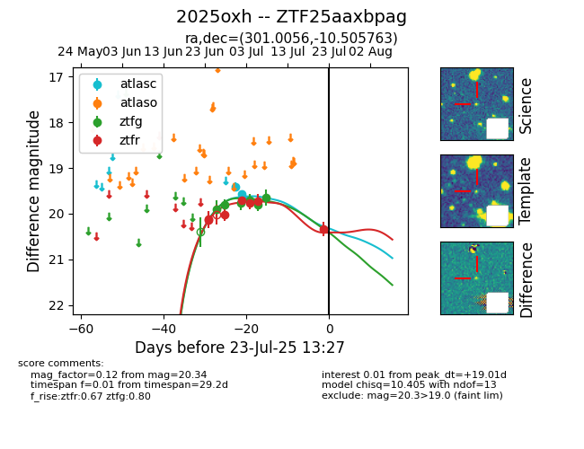

Target ZTF25aaxbpag at 2025-07-23 13:27, see:
FINK: fink-portal.org/ZTF25aaxbpag
Lasair: lasair-ztf.lsst.ac.uk/objects/ZTF25aaxbpag
ALeRCE: alerce.online/object/ZTF25aaxbpag
TNS: wis-tns.org/object/2025oxh
YSE: ziggy.ucolick.org/yse/transient_detail/2025oxh
alt names
ZTF25aaxbpag (ztf,fink)
2025oxh (tns,yse)
coordinates:
equatorial (ra, dec) = (301.0056,-10.50576)
galactic (l, b) = (31.5436,-20.83474)
photometry
last atlasc=19.67, ztfg=19.65, ztfr=20.34
3 atlasc, 6 ztfg, 7 ztfr detections
